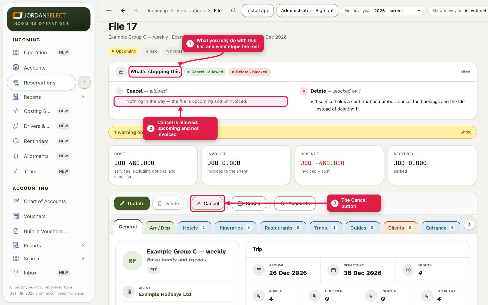
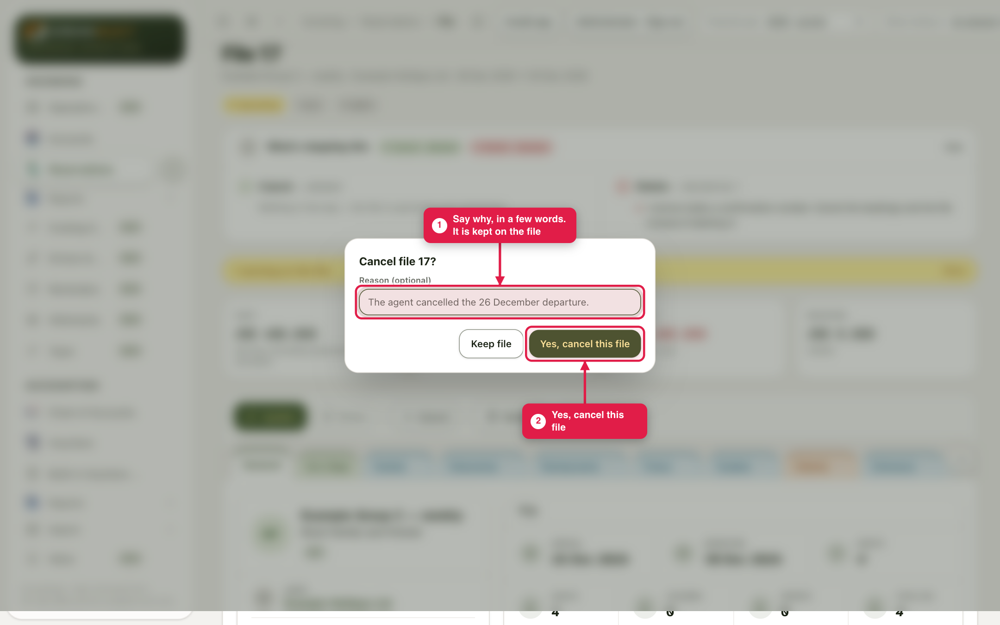
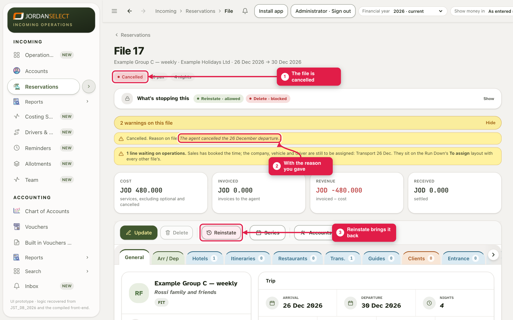
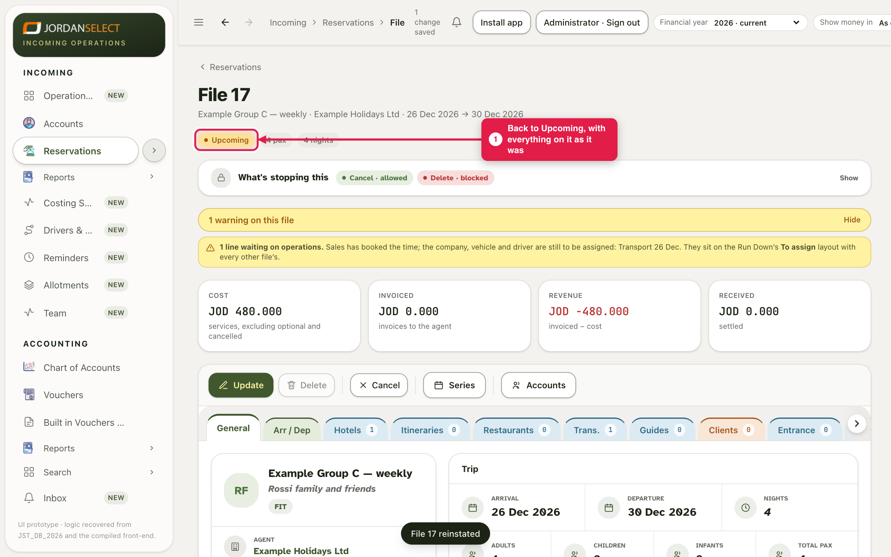

The agent has cancelled a group. Cancel its file with the reason, and bring it back if they change their mind.
WhoOperations or Sales
WhereThe file → Cancel / Reinstate
Takes1 minute, plus telling the suppliers
You needThe agent’s cancellation
How it works
The file itself says what you may do with it, and why not. Cancel is allowed while the group has not arrived and the agent has not been invoiced. Reinstate brings a cancelled file back. Delete is only for a file opened by mistake, and is refused once anything is booked or invoiced.
Example in this guide: file 17 (Example Group C — weekly, 26 December) is cancelled because the agent cancelled that departure, then reinstated.
1. Cancel the file
1
Open the file. The What’s stopping this bar says whether you may cancel. Click it to see the details and anything in the way. Click Cancel in the button row.

Cancel allowed. Delete is blocked because a booking holds a confirmation number.
2
Type the reason in a few words and click Yes, cancel this file. “Keep file” changes nothing.

The reason is kept on the file for everyone to see.
3
The file shows Cancelled. The reason is under the yellow warnings bar: click it to open. In Reservations it moves from Live to Cancelled, and on the file Reinstate takes the place of Cancel.

Find it again in Reservations under Show: Cancelled or All.
Cancelling the file does not cancel the bookingsThe hotel stays booked, the transfer stays on the file, and nobody is told. E-mail each hotel, transport company and guide on the file yourself, and mark their lines Optional / Cancelled once they have agreed.
2. Reinstate it
4
If the agent changes their mind, open the file and click Reinstate. It is back at once, as it was.

Upcoming again, with everything on it unchanged.
3. When it is not allowed
The panel says
What to do
The group has arrived or left
It cannot be cancelled. Ask the accountant to close the file instead.
The agent has an invoice
The accountant must issue a credit note or refund first.
Cannot be reinstated
A credit note or refund has been posted. Open a new file for the group.
Questions? Ask the operations manager. · Last checked: 11 Nov 2026 · Screens shown are from a test copy of the CRM with made-up data.